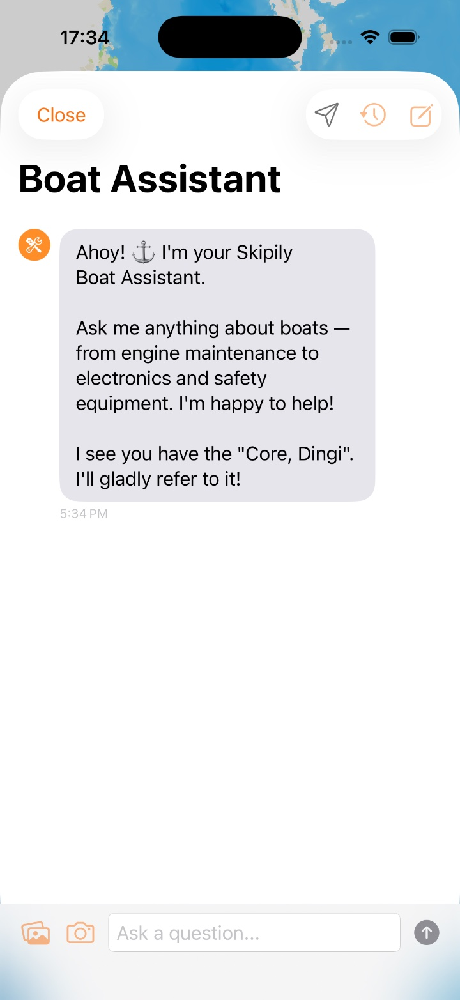
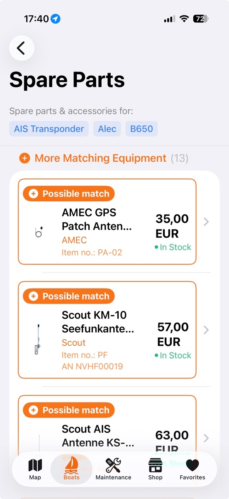
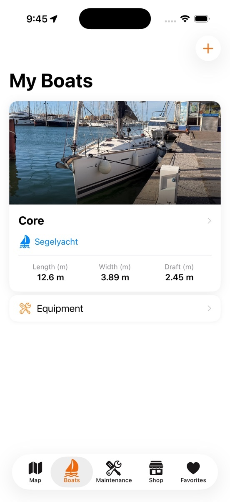
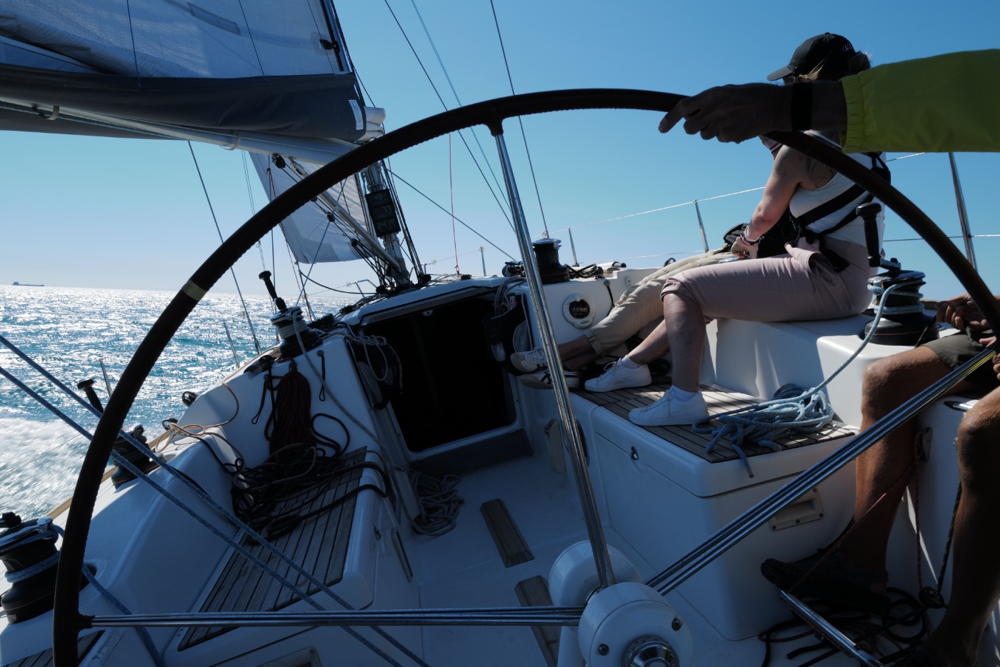

Iets kapot aan boord? Binnen minuten weet je wie helpt en welk onderdeel past.
Vraag het de boot-AI, vind servicepartners die je echt vertrouwt en het onderdeel dat echt past. Geen telefoonmarathon, geen « het zal wel passen », geen forum om middernacht.
Gratis voor iPhone & iPad · Web-app voor Android · Kernfuncties gratis
Skipily aan boord
Van vraag naar oplossing: AI-antwoord, passend onderdeel, werf in de buurt.
Een boot ligt in een van de ruigste omgevingen die er zijn.
Zon, wind, golven en zout water werken de klok rond tegen het schip. Niets houdt pauze als je niet aan boord bent. Daarom is er op een boot altijd iets te doen.
Tegelijk is een jacht een zeer complex technisch apparaat. Motor, rig, elektra, zeilen, veiligheidsmiddelen, sanitair: veel dingen moeten in orde zijn om veilig op zee te zijn. Valt er één uit, dan merk je dat meestal niet aan de steiger, maar buiten.
Zon
UV breekt gelcoat, dekzeilen, zeildoek en afdichtingen af. Langzaam, maar zonder onderbreking.
Wind & golven
Constante beweging in rig, fittingen en lagers. Wat schuurt, begeeft het uiteindelijk.
Zout water
Corrosie in elektra, contacten en alles van metaal, ook waar niemand kijkt.
Techniek aan boord
Motor, elektronica, rig en veiligheidsmiddelen, elk met eigen intervallen en eigen onderdeelnummers.
Als er iets kapot is, stel je jezelf altijd dezelfde drie vragen.
Skipily beantwoordt alle drie — in één app, met de gegevens van jouw boot erachter. De screenshots komen uit de app, de markeringen laten zien waar de functies voor dienen.
Hoe help ik mezelf?
De Boat Assistant kent jouw uitrusting en beantwoordt concrete vragen: van « welke olie heeft mijn Yanmar 3JH5E nodig? » tot « hoe ontlucht ik de dieselmotor? ». Geen algemeen chatantwoord, maar een antwoord met de context van jouw boot.
- 1 Geschiedenis, delen, nieuwe chat. Elk antwoord blijft vindbaar en kan direct naar een servicepartner worden doorgestuurd.
- 2 Hij kent jouw schip. Al in de begroeting noemt hij de geregistreerde boot. De uitrusting, serienummers en onderhoudsgegevens zijn zijn context.
- 3 Vraag typen of foto sturen. Via galerij en camera komt een foto van de schade direct in de chat.

1 2 3 1
2
1
2
 3
4
5
3
4
5
Waar vind ik een betrouwbare servicepartner in de buurt?
Werven, werkplaatsen, zeilmakers, spuiters en tankstations — duizenden aanbieders in heel Europa op één kaart. Van de Middellandse Zee tot de Oostzee, gefilterd op categorie en merk.
- 1 Zoeken op naam, merk of dienst en daarbij het categoriefilter voor werf, motorservice, rigging of zeilmaker.
- 2 Clusters met het aantal bedrijven. Je ziet direct waar de dichtheid hoog is en zoomt in tot de enkele aanbieder.
- 3 Beoordelingen van echte eigenaren, en je kunt er zelf een schrijven. Alleen geverifieerd, geen anonieme sterren.
- 4 Aanvraag direct vanaf de kaart. Met de gegevens van jouw boot in de briefing, zonder alles opnieuw te typen.
- 5 Telefoon, mail, web en route met één tik en daaronder de diensten in gewone taal: winterstalling, kraan, fittingen.
Waar krijg ik het juiste onderdeel?
Vanuit elk uitrustingsitem direct naar het juiste onderdeel. Skipily sorteert de resultaten in drie duidelijke categorieën, in plaats van je uren te laten zoeken naar de juiste impeller of waterfilter.
- 1 De zoekopdracht komt uit jouw uitrusting. Apparaat, fabrikant en model staan al boven. Je typt geen artikelnummer.
- 2 Passende uitrusting erbij. Wat bij hetzelfde apparaat hoort, is meegeteld en uitklapbaar.
- 3 Categorie, prijs en levertijd op één regel. Geen « het zal wel passen », geen telefoontje om het na te vragen.

1 2 3« Ik zeil al meerdere decennia met veel plezier, heb twee boten gebouwd, één gerestaureerd en zeil nu een Beneteau First 40CR. »
« Wat mij al vele jaren ergernis en frustratie bezorgt, is slechte service, verkeerde onderdelen en het ontbreken van snelle hulp aan boord wanneer ik die nodig heb. Dat alles biedt SKIPILY nu. In deze app hebben we alles samengebracht wat wij als booteigenaren nodig hebben om onze schepen altijd veilig zeeklaar te houden. »
En tussen de problemen: alles vastgelegd.
De meeste problemen beginnen niet met een storing, maar met een gemist interval. Daarom zitten beide in Skipily bij elkaar: de boot met alle uitrusting en het onderhoud met status en herinnering.
 1
2
3
1
2
3
Onderhoud met statuskleuren
Onderhoudsintervallen per uitrustingsstuk, met een push-herinnering ruim voor de volgende inspectie.
- 1Nieuwe taak aanmaken, met een eigen interval in jaren of motoruren.
- 2Overdue — rood omlijnd en met vervaldatum. Die komt eerst.
- 3Upcoming — staat op de rol, maar niet kritisch. Groen betekent: alles in orde.

1 2Boot & uitrusting
Alle bootgegevens, foto's, maten en serienummers op één plek, ook offline.
- 1Jouw schip met foto, type en rompmaten — lengte, breedte, diepgang.
- 2De uitrustingslijst is het startpunt voor onderdelen, aanvragen en AI-antwoorden.
Serviceaanvraag in 10 seconden
Je tikt bij een uitrustingsitem op « aanvraag » en Skipily bouwt de volledige briefing: merk, model, serienummer, matenblad, inbouw- en onderhoudsgegevens, foto's. Je kiest alleen nog de servicepartner. De briefing ontstaat automatisch in zes talen, foto's en het zeilmatenblad zitten er direct bij, en je ziet alles voor het versturen.
Wat Skipily allemaal kan
Van de uitrustingslijst tot het zeilmatenblad. Functies die alleen met Plus beschikbaar zijn, zijn gemarkeerd.
Boot & uitrusting
Alle gegevens, foto's, maten en serienummers op één plek, ook offline.
Onderhoudsstatus
Rood, geel, groen: met één blik zie je wat er aankomt.
1:1 onderdelen
Origineel, derivaat of alternatief, duidelijk gecategoriseerd per zoekopdracht.
Serviceaanvraag
Vooraf ingevulde briefing met uitrustingsgegevens en foto's, direct naar de werf.
Zeilmatenblad
De volledige opmeting voor je zeilmaker: alle maten, één PDF, klaar.
AI-assistent
Antwoorden op bootvragen met jouw uitrusting als context, de klok rond.
Schadefoto-analyse
Laat schade beoordelen op foto voordat je naar de werf rijdt.
Kaart van Europa
Werven en dealers van Scandinavië tot de Middellandse Zee op één kaart.
Smart Notifications
Push-herinneringen ruim voor elk aankomend onderhoud.
Echte beoordelingen
Alleen geverifieerde beoordelingen van eigenaren, plus de Trusted Provider-markering.
Zes talen
Deutsch, English, Français, Italiano, Español, Nederlands.
Voor aanbieders
Aanbiedersportaal met catalogus, aanvraagbeheer en Stripe. Portaal bekijken
Alles wat je nodig hebt om veilig op zee te zijn.
Boot-AI, onderdelen en servicepartners in één app. Gratis voor iPhone en iPad, als web-app voor Android — alle kernfuncties blijven gratis.
Deutsch · English · Français · Italiano · Español · Nederlands
